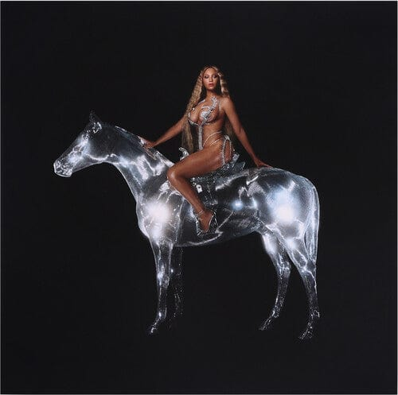
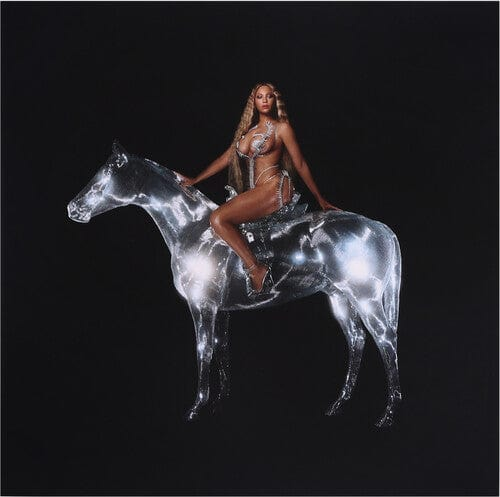

BEYONCÉ

Beyoncé Knowles-Carter is one of the most iconic and influential artists of all time. From her early days with Destiny’s Child to her reign as a solo performer, Beyoncé has redefined music, performance, and power in popular culture.
Her work blends genres — R&B, pop, soul, hip-hop, funk — with visual artistry, cultural commentary, and emotional depth. Known for her precision, work ethic, and flawless vocals, Beyoncé is also a trailblazer in releasing visual albums that elevate music to cinematic experiences.
Beyond the stage, she’s a symbol of Black excellence, feminism, and creative control. With her company Parkwood Entertainment, Beyoncé has taken full ownership of her narrative, producing and directing projects that celebrate identity, family, and liberation.
She has received numerous awards, including Grammys, a Peabody, and the CFDA Fashion Icon Award, all while using her platform to support social justice movements, HBCUs, and disaster relief through her BeyGOOD Foundation.
.png) 

Lemonade (2016) is one of Beyoncé’s most acclaimed works — a deeply personal and political visual album that blends themes of infidelity, resilience, Black womanhood, and heritage. With tracks like “Formation,” “Sorry,” and “Freedom,” Beyoncé showcased vulnerability and strength in equal measure, earning praise for both its music and its powerful visuals.
In 2022, Beyoncé released Renaissance, a high-energy, dance-driven celebration of Black queer culture, house music, and self-expression. Songs like “Break My Soul” and “Alien Superstar” reinvigorated club sounds with modern flair. The album was hailed as a triumphant return, reminding the world why Beyoncé remains at the forefront of music innovation.